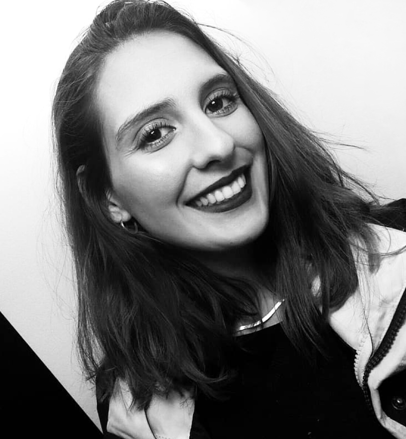

I’m a young Portuguese designer, born in 1997. Currently living in Sesimbra, a beatiful small town, near the sea. Came to Lisbon to make a dream come true, study Arts in the Faculty of Fine Arts, University of Lisbon.
Took the Bachelors Degree in Communication Design and, currently, I’m still studiyng in FBAUL, taking a Pos Degree in Digital Experience Design.
I’m curios, dedicated and love to learn new things from new people. I’m passionate about multidisciplinary Design and allways try to provide the best solution in every project.